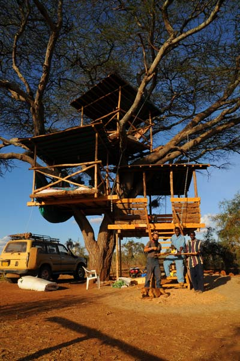
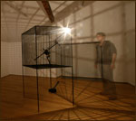
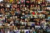

people doing strange things with electricity
The 1937th dorkbot-nyc meeting took place at 7pm on Wednesday, May 6th, 2009 at Location One in SoHo.
The meeting was free and open to the public. Please brought snacks to share. YUMM.
It featured the luxuriantly airborne:
announcement flyer (thanks Joel Schlosberg!)

justin downs: how to be creative not making art, and how to make art creatively not be itself.
The projects i have typically worked on have been large scale art ventures (engineering design/fabrication of the Carbon Arc Lamp for the Starn Twins 2003 and Play the Building for David Byrne 2005,2008, 2009 two examples). Recently I have found avenues of working which allow for interesting projects that have functional utility. The last project was building a solar powered tree house in the Kenyan Maasai land. The current one is developing with the Wave Farm a semi intelligent solar powered mesh network, which will hopefully translate into tracking collars and techniques, for african wildlife.
http://www.grndlab.com
http://www.johnhenryshammer.com
Conrad Shawcross: Slow Arc III
British sculptor and Location One international fellow creates multimedia kinetic sculptures that explore the artist's interest in philosophy, science and the mysterious structures of the universe. He will present a new work which features a halogen light moving along an articulated arm inside a mesh cube and some of his earlier work.
http://www.location1.org/conrad-shawcross
Graham Smith: Social Network--A Digital Painting
I have 413 Facebook friends and in one week I saw more then 100 of them in RL. I wanted to create a work of art about virtual friends so to do that I visited them in person. I got a picture of me with lost friends, childhood buddies, ex-girlfriends, family, and people from high school I didn't talk to. I asked them about their RL friends, asked for a physical souvenir, and took their pulse to be used for a 'digital painting' of lightning bugs. The 'painting' is a wall mounted laptop running a looped program.
http://grahamgrafx.com
http://socialnetworkstories.com
We're taking a summer break! Next meeting: 02 September 2009